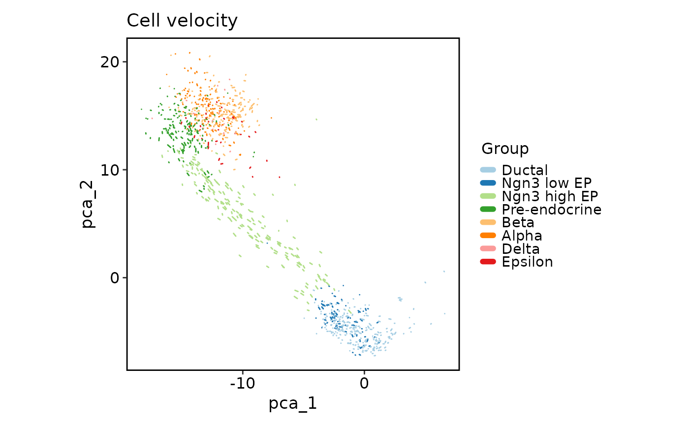

This function creates a cell velocity plot for a Seurat object,
a Giotto object, a path to an .h5ad file or an opened H5File by hdf5r package.
It allows for various customizations such as grouping by metadata,
adding edges between cell neighbors, highlighting specific cells, and more.
This function is a wrapper around plotthis::VelocityPlot(), which provides a
flexible way to visualize cell velocities in reduced dimensions. This function
extracts the cell embeddings and velocity embeddings from the Seurat or Giotto object
and passes them to plotthis::VelocityPlot().
Usage
CellVelocityPlot(
object,
reduction,
v_reduction,
spat_unit = NULL,
feat_type = NULL,
group_by = NULL,
...
)Arguments
- object
A seurat object, a giotto object, a path to an .h5ad file or an opened
H5Filebyhdf5rpackage.- reduction
Name of the reduction to plot (for example, "umap").
- v_reduction
Name of the velocity reduction to plot (for example, "stochastic_umap"). It should be the same as the reduction used to calculate the velocity.
- spat_unit
The spatial unit to use for the plot. Only applied to Giotto objects.
- feat_type
feature type of the features (e.g. "rna", "dna", "protein"), only applied to Giotto objects.
- group_by
A character vector of metadata column name(s) to group (color) the data. Default is NULL.
- ...
Other arguments passed to
plotthis::VelocityPlot().
Examples
# \donttest{
data(pancreas_sub)
CellVelocityPlot(pancreas_sub, reduction = "PCA", v_reduction = "stochastic_PCA")
CellVelocityPlot(pancreas_sub, reduction = "PCA", v_reduction = "stochastic_PCA",
plot_type = "grid")
CellVelocityPlot(pancreas_sub, reduction = "PCA", v_reduction = "stochastic_PCA",
plot_type = "stream")
CellVelocityPlot(pancreas_sub, reduction = "PCA", v_reduction = "stochastic_PCA",
group_by = "SubCellType")

# }